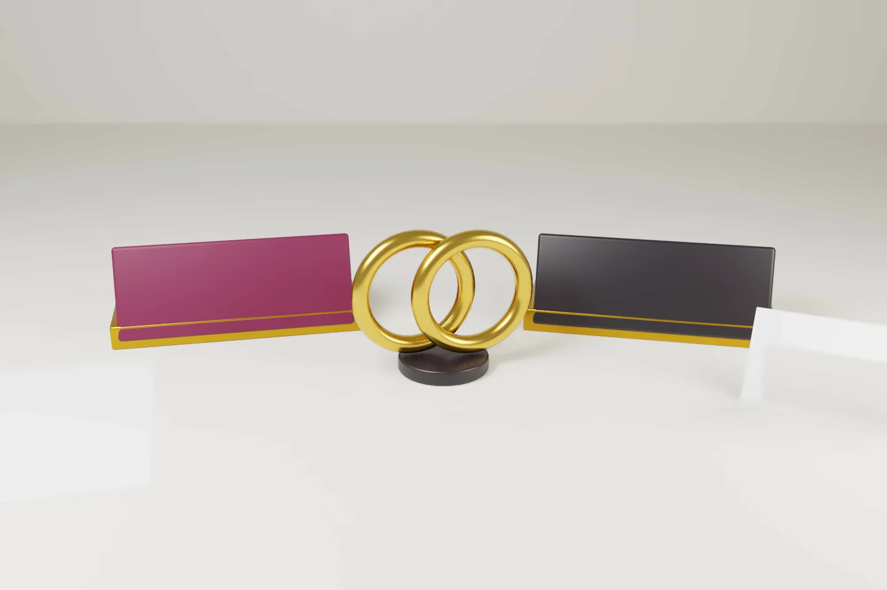

The iPhone Duo trademark question is not whether anyone owns the word duo. It is what each owner has actually registered, for which goods, and how the name reaches buyers.
Apple announced iPhone Duo on 9 September 2026 and called it the first foldable iPhone. Pre orders open on 16 October and sales begin on 23 October 2026. The launch revived an old naming debate. On 9 September Duolingo joked on X that Apple had named a phone after its mascot. Commentators recalled Microsoft's Surface Duo phones, which reports in 2023 said Microsoft had stopped making.
Our earlier article, DUO v DUO: can two brands share a trade mark, covered how distinctive the word is, earlier use and coexistence. This piece looks at three new questions. What has Apple filed? What protection does a mascot name have? What happens to a retired product name?
What the registers show
Apple Inc. filed US application No. 50098431 for IPHONE DUO in standard characters on 9 September 2026, the day of the announcement. It covers smartphones and smartphone covers and cases in class 9. The bases are intent to use and section 44(d) of the Lanham Act. The priority claim rests on Liechtenstein application No. 20260195, filed on 12 March 2026. On 6 October 2026 the USPTO record showed the application awaiting an examining attorney.
Microsoft holds US Registration No. 6381337 for SURFACE DUO in standard characters. It was filed on 3 December 2019 and registered on 8 June 2021. It covers computer hardware, including mobile and handheld computers, in class 9. Public register data still lists it as registered.
Duolingo's US registrations that we checked protect DUOLINGO and its owl design. Two owl design examples are Registration No. 7139567 for plush toys and No. 7170122 for stickers. We did not find a US registration for DUO alone in Duolingo's name. The word DUO alone is registered to an unrelated company, Duo Venues LLC, for venue booking software in class 42 (Registration No. 5250730).
- Apple's US filing is for IPHONE DUO as a whole, with its house mark first. It is not a filing for DUO alone.
- Apple secured a March 2026 priority date through a Liechtenstein application, almost six months before the public launch.
- Microsoft's SURFACE DUO registration remains on the US register although the phones are no longer sold.
- A mascot name is protected as a trade mark only to the extent it is used and recognised as a mark.
- No dispute between the three companies has been filed or reported.
A quiet priority filing before the launch
The Paris Convention gives a six month priority period for trade marks under Article 4C(1). An applicant who files first in any member country can file elsewhere within six months and keep that first date. Apple's Liechtenstein filing on 12 March 2026 and its US filing on 9 September 2026 fall inside that window.
The same rule applies in the EU through Article 34(1) of the EU Trade Mark Regulation. India gives effect to Convention priority through section 154 of the Trade Marks Act, 1999. A first filing in a smaller office fixes an early date while the name stays out of the main registers.
The lesson for any business is simple. The priority clock starts with the first filing, not the announcement. File before the name becomes public, and then file in the key markets within six months.
A model name used under a house mark
IPHONE DUO and SURFACE DUO share only the word duo. Each begins with a well known house mark, and each house mark names a different company. Courts and offices compare the marks as a whole. They ask whether the relevant buyer is likely to be confused about the source of the goods.
In the US and the EU the test is likelihood of confusion. In the EU it sits in Article 9(2)(b) of the Regulation. In India the comparable provision is section 29(2) of the Act. A shared common word joined to two different house marks will rarely suggest a single source. The analysis changes if a company drops its house mark and sells under the bare word. It also changes if the earlier owner has built real recognition in duo alone.
The goods matter too. Apple and Microsoft both cover phones or handheld computers in class 9. Duolingo's main field is language education apps.
Can a mascot name stop a phone name?
A character name can be a trade mark. That happens only when buyers see it as a sign of trade origin, not merely as the name of a cartoon. Duolingo's protection that we found on the register lies in the DUOLINGO name and the owl device. A claim based on the word duo alone would need proof of use and recognition of that word as Duolingo's mark.
Famous mark protection does not depend on confusion, but the threshold is high in each jurisdiction:
- United States. Under 15 U.S.C. section 1125(c), dilution protects a famous mark. A mark is famous only if it is widely recognised by the general consuming public of the United States as a source identifier.
- European Union. Article 9(2)(c) of the Regulation protects a mark with a reputation in the Union. It covers use that takes unfair advantage of the mark or harms it, even for dissimilar goods.
- India. Section 29(4) of the Act protects a registered mark with a reputation in India against similar marks on dissimilar goods. Use must be without due cause and take unfair advantage of the mark or harm it. Well known marks also bar later registrations for different goods under section 11(2).
Each route asks about the mark the claimant owns. Fame in DUOLINGO or in the owl does not automatically extend to a common word used by many traders. The register already shows unrelated owners of DUO. That crowding cuts against a claim to exclusive rights in the word alone. Our article on well known trade marks across classes in India explains how Indian courts apply these rules.
What happens to a retired product name?
A registration does not lapse because the product stops. It becomes vulnerable to a non use challenge after a set period. The periods differ:
- United States. Under 15 U.S.C. section 1127, a mark is abandoned when use stops with intent not to resume. Non use for three consecutive years is prima facie evidence of abandonment.
- European Union. Article 58(1)(a) of the Regulation allows revocation after a continuous five year period without genuine use in the Union. Article 18 sets the underlying duty to use the mark within five years of registration.
- United Kingdom. Section 46(1) of the Trade Marks Act 1994 allows revocation after five years without genuine use, unless there are proper reasons.
- India. Section 47(1)(b) of the Act allows removal after five continuous years without bona fide use. The period is counted up to three months before the application.
Reports in 2023 said Microsoft had stopped selling the Surface Duo 2 and dropped a third model. Support for the Surface Duo 2 ended on 21 October 2024. If US sales stopped in early 2023, the three year US presumption may have arisen in 2026. The five year periods in the EU, the UK and India have not run. Microsoft must also file a US declaration of use by 8 June 2027. Use is judged on the facts. For a newcomer, a dormant registration is still a registration until an office or court removes it.
What this does not decide
No court or office has ruled on any of this. We found no opposition, suit or public dispute between the three companies. The US application has not yet been examined. Any coexistence agreements would be private.
Practical steps for naming a product
- Search the full product name and the bare word, in every class where the product and its apps will sell.
- Use the house mark with the model name, in the same field of view, at launch and in advertising.
- Make the first filing before any announcement, and use the six month priority window for other markets.
- Before adopting a name used by a retired product, check its register status. Check any non use periods before you plan a challenge or approach the owner.
- Do not rely on a mascot or character name alone. Register it as a word mark for the goods and services where you actually use it.
Our trade mark search and registration services cover clearance, filing and opposition work in India and international filings.
Frequently asked questions
Has Apple trademarked iPhone Duo?
Apple has applied, not registered. US application No. 50098431 for IPHONE DUO was filed on 9 September 2026 for smartphones and cases. It claims priority from a Liechtenstein filing of 12 March 2026.
Can a company trademark a common word like duo?
Yes, for specific goods or services, if it is not descriptive of them. The protection usually stays narrow when many traders already use the word in other fields.
Does a trade mark expire when a product is discontinued?
No. It stays on the register until it lapses or is removed. A third party can seek removal for non use. This is generally after three years in the US. It is five years in India, the EU and the UK.
Official source
- USPTO record, US application No. 50098431, IPHONE DUO
- Apple Newsroom, Apple unveils iPhone Duo, 9 September 2026
- Paris Convention for the Protection of Industrial Property, Article 4C
- 15 U.S.C. section 1125 (dilution), 15 U.S.C. section 1127 (abandonment) and 15 U.S.C. section 1058 (declaration of use)
- Regulation (EU) 2017/1001 on the European Union trade mark
- Trade Marks Act, 1999 (India)
- Trade Marks Act 1994 (UK), section 46